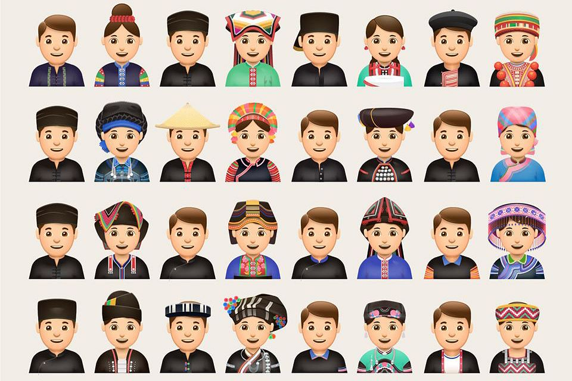

Vietnam has a rich history dating back thousands of years
Things I love about my homeland
Let me tell you a brief history about the country's founders and kingdoms:
Dynasties
Year
Kingdom
Mạc
1527-1593
Đại Việt
Tây Sơn
1789-1802
Đại Việt
Nguyễn
1802-1945
Việt Nam
Vietnam
1945-now
Hà Nội
Vietnam's colonization began in the 19th century when the French established control over the region, leading to the formation of French Indochina in 1887. This colonial period lasted until World War II, during which Japan occupied Vietnam. After the war, Vietnam declared independence from France in 1945, leading to the First Indochina War and ultimately the division of the country into North and South Vietnam. The Vietnam War ensued in the 1960s, ending with the fall of Saigon in 1975 and the reunification of Vietnam under communist rule.
Culture of Vietnam
Discover the culture of Vietnam
Vietnam's culture is a vibrant mosaic blending indigenous traditions with influences from China, India, and France. Known for its deep reverence for family, Confucian values, and Buddhist spirituality, Vietnamese culture embraces diverse rituals, colorful festivals, exquisite cuisine, and traditional arts such as water puppetry and silk weaving. The warmth of hospitality, respect for elders, and a strong sense of community permeate everyday life, fostering a profound sense of unity and identity among its people.

54 different tribes and enthic minorities in Vietnam
Some fun facts about my culture:
We have over 54 tribes of minorities focusing around Central Vietnam
Water puppetry, a traditional Vietnamese art form dating back to the 11th century, combines puppetry, music, and water on stage, depicting scenes from rural life and folklore.
Ao Dai, the elegant traditional dress of Vietnam, is characterized by its long flowing tunic worn over loose-fitting trousers, symbolizing grace and beauty
Lunar New Year, known as Tet Nguyen Dan, is the most important holiday in Vietnam, marked by colorful celebrations, dragon dances, and family reunions.
The game of Đá Cầu (shuttlecock kicking) is a popular traditional sport in Vietnam, involving keeping a weighted shuttlecock in the air using only the feet and other body parts.
Vietnam has a rich tradition of handicrafts, including lacquerware, ceramics, embroidery, and bamboo weaving, showcasing intricate designs and skilled craftsmanship.
Vietnam is famous for its rich culinary heritage, with iconic dishes like pho (noodle soup), banh mi (baguette sandwich), and spring rolls enjoyed worldwide.
The Vietnamese language, influenced by Chinese characters and French vocabulary, is tonal, meaning the meaning of a word can change based on the pitch of pronunciation.
The Hat Xam (blind musician's music) is a unique form of Vietnamese folk music performed by blind musicians who sing and play traditional instruments, often improvising verses on topical themes.
Cuisine of Vietnam
Discover the cuisine of Vietnam
Vietnamese cuisine is famous for its fresh ingredients, complex flavors, and vibrant dishes
Vietnamese Foods
Popular Food
Description
Banh Mi
A Vietnamese sandwich made with a French baguette and filled with various ingredients such as grilled meats (like pork or chicken), pickled vegetables (carrots, daikon radish), fresh cilantro, and mayonnaise or pate.
Com Tam
A Vietnamese broken rice dish often topped with grilled pork (com tam suon), shredded pork skin (bi), a steamed egg cake (cha trung), and served with fish sauce on the side.
Bun Cha:
dish from Hanoi featuring grilled pork patties (cha) served with vermicelli noodles (bun), fresh herbs, and a dipping sauce typically made with fish sauce, lime, sugar, and garlic.
For a budget of $20 you can expect to get:
You can buy one t-shirt or 20 t-shirts on a market.
You can go on a day trip and have pizza afterwards.
You can eat 8 breakfasts, 9 lunches AND 10 dinners.
Or you can spend it on one lunch.
You can have a 90 minutes of full body massage and facial treatment.
You can fill your tank on your motorbike 17 times.
You can take a motorbike taxi and drive around for a few hours.
You can rent 4 bikes for a day.
You can buy 45 killos of Passion Fruit.
You can get really drunk on the street with your friends and pay taxi home.
You can buy 40 local banh mi sandwiches.
You can go on a date.
Must-Visit Attractions
Top Ranking Tourist Attractions
Discover the top attractions and landmarks in Vietnam